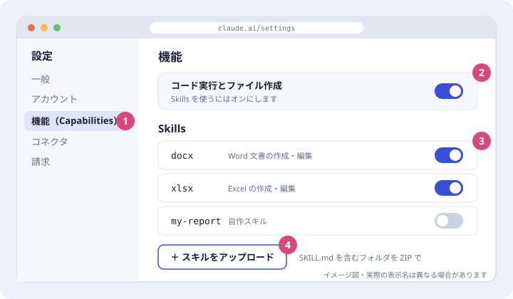
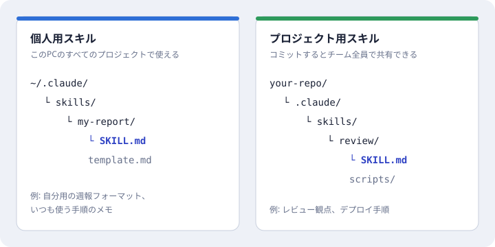
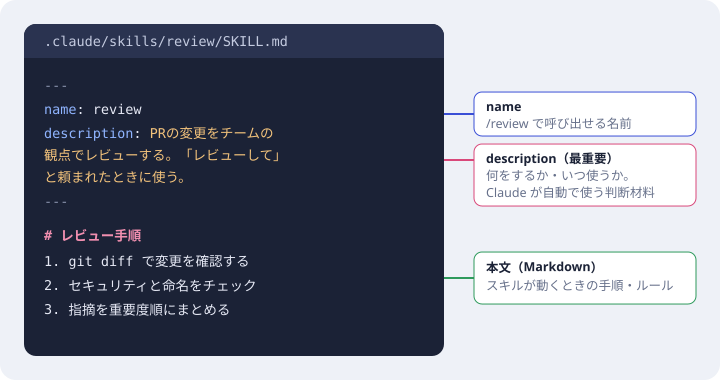
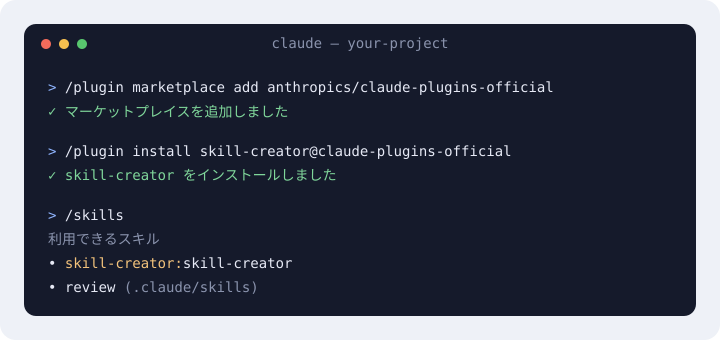

Claude Skills · 2026-10-23 時点
このセッションで有効になっている Skills をカテゴリごとのパネルにまとめました。パネルを回して、スキルを選ぶと内容と呼び出し名が表示されます。
← → キー・スワイプ・ドラッグでも回せます
パネルのスキルを選ぶと、ここに説明が表示されます。
使う場所によって追加方法が3通りあります。図はイメージで、実際のメニュー名は変わることがあります。
Claude.ai・デスクトップアプリ
SKILL.md を含むフォルダを ZIP にして スキルをアップロード から追加します。Team・Enterprise プランでは、管理者が組織の設定で Skills を有効にしている必要があります。

Claude Code・自作スキル
~/.claude/skills/スキル名/、チームで共有するならリポジトリの .claude/skills/スキル名/ を作ります。SKILL.md を作ります。補助のテンプレートやスクリプトも同じフォルダに置けます。
SKILL.md の書き方
--- で囲んだ部分に name と description を書きます。description には「何をするか」と「いつ使うか」を具体的に書きます。Claude はこれを見て、頼まれた内容に合うスキルを自動で読み込みます。Claude.ai にアップロードする場合、使える項目は name・description・license・compatibility・metadata・allowed-tools の6つです。

Claude Code・配布されているスキル
/plugin marketplace add anthropics/claude-plugins-official/plugin install skill-creator@claude-plugins-official/skills で使えるスキルの一覧を確認します。/スキル名 で直接呼ぶか、内容に合う依頼をすると自動で使われます。プラグインのスキルは /プラグイン名:スキル名 の形になります。このページのスキル一覧にある design: や data: は、このプラグイン名です。
